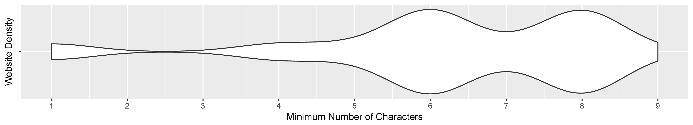
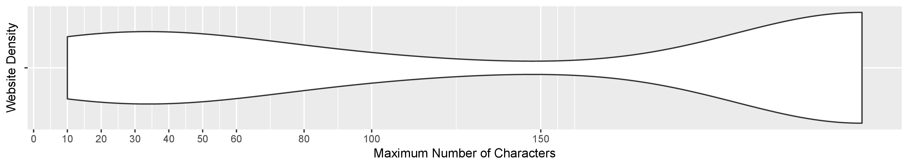

In the previous chapter, we reached the conclusion that users’ mental models of password strength are fairly accurate with some exceptions. We can thus expect that users at least try to create strong passwords if they deem the account worth protecting. However, this is only one side of the coin: Even if users succeed in creating a very strong password, they still have to manage a multitude of accounts. Therefore, password reuse is rampant. Although it is necessary to some degree [116, 389], it remains hard to defend against. At the same time, password reuse might expose users to an even greater risk than weak passwords. In case an attacker obtains a user’s plain text password, they gain access to all accounts that share this strong password. Studies have shown that users tend to underestimate the risks generated by password reuse [186]. In fact, password reuse can render the security advantages of picking a very strong password void, which is not immediately understood by users.
As explained in Section 3.3.1, password composition policies are one of the interventions targeted at weak passwords. However, in many cases users fulfill requirements in predictable ways, so policies often fail their primary goal. If password policies do not always benefit password strength, could they at least prevent password reuse? Heterogeneous policies across different web sites with mutually exclusive requirements could effectively disallow users to reuse passwords like they tend to do. In this chapter, we investigate password policies of one hundred of the most-visited web-services in Germany. This extensive audit should answer our research question “Do password policies prevent password reuse?” We shed light on the findings and discuss them in the context of supporting password authentication.
The dataset and the analysis have been previously published at CHI 2017 together with Manuel Hartman, Jakob Pfab, and Samuel Souque [288]. For the most part, the chapter picks up the content of that paper and puts it into the larger context of this thesis.
Password reuse is a major threat because it is easy for attackers to compromise many accounts at once. Even if users try to slightly modify their base password, attackers are still able to crack a large portion of the resulting passwords [67, 175]. There is mixed evidence about the subset of passwords that are reused more often, but generally one can identify a “go-to password” for regular sites, “high-value passwords” for important sites, and a “don’t care” password for the rest [17, 111, 154, 316, 317, 345, 363].
Password policies were originally designed to combat weak passwords, but some of them try to steer users away from reused passwords. Usually, this is done through black lists that block passwords that have already been exposed after a data breach. If a user tried to reuse a password which has been leaked, the system can detect this and enforce the creation of a new one. However, Habib et al. showed that users perform predictable alterations to circumvent the black-list filter [146]. In total, they identified 13 modification techniques. For instance, participants in the study added digits, symbols, words or letters. Habib et al. conclude that blacklists are only useful, if a user’s password modifications are not obviously based on a blacklisted word. Segreti et al. evaluated a different approach to combat reuse, known as the “Popularity is Everything” system [285]. Here, a password becomes blacklisted after a certain number of users have used the same password. Reuse in this case means reused by many users, instead of a single individual reusing the credentials multiple times.
In most cases, it is impossible to display the full list of blacklisted words in the user interface, so many service providers cannot do this. Thus, reverse engineering by testing different passwords is required to draw conclusions on a provider’s policy. Florêncio and Herley audited policies of public institutions and high-traffic website this way [112]. They found that online retailers have much looser password policies than government or university sites. Wang and Wang similarly checked the policies of 50 representative websites [361] to estimate the resulting entropy of the passwords. They took passwords from leaked datasets and picked 16 passwords with varying hypothetical strength. Unlike us, they did not aim to identify black-lists or special forbidden character types. Carnavalet and Mannan managed to automate dictionary checks by leveraging keep-alive connections [48]. However, they focused on server-side strength estimations rather than blacklists per se.
Reverse engineering password policies is tedious and might even violate the terms and conditions of a website. Thus, it would be favorable to compile a repository that contains all policies. This way, double efforts can be avoided, and service providers could be more transparent by specifying their own policies. The “policy-repository” would also be useful for a password generator that takes the site’s policy into account to avoid rejected passwords. In an effort to create such a repository, Steves et al. proposed to crowd-source the data and defined a formal language (based on XML) to describe policies [313]. The idea was later picked up and extended by Horsch et al. [166].
In summary, we conclude that certain policies based on blacklists can help in mitigating password reuse to some degree. However, blacklists entail usability issues because users have no way of finding out which passwords are actually on the blacklist of a given website. For our project, this lack of transparency makes it hard to find out and compare policies of different websites, which demands a careful development of a suitable methodology.
To create a rich useful data set for studying password policies, we need to address two central aspects: selecting representative web sites and determining appropriate passwords. The first part is relatively straight-forward. We took Alexa.com rankings as indicator for the popularity of a website. To accomplish the analysis in a reasonable time frame, we took the 100 most visited web sites in Germany, which is 100% more than Wang and Wang, and 33% more than Florêncio and Herley. As of May 2016, out of these 100 services, 83 allowed public online registrations. The remaining 17 sites were banks, mobile carriers, or pay-tv providers who require offline registration and verification as a security measure. The websites and their policies are listed in Table .1 (Appendix). Although we took the most-visited websites in Germany, the results have implications for an international audience, because many of the audited sites operate globally.
The second challenge is finding suitable passwords to reverse-engineer password requirements. We approached this task in two separate stages to find a good candidate set.
Similar to Wang and Wang, we crafted 15 passwords showing typical password characteristics. The passwords followed common policy categories as proposed by Shay et al. [295]. For instance, some passwords met a 3class12 policy by including three different character classes (lower-/uppercase letters, digits) and a minimum length of 12. Next, we tried to register new accounts with all of these 15 passwords at all 83 websites. In case the site rejected the password, we investigated the reasons and modified the password until the policy was fulfilled, e.g. by adding or removing characters. This new password was then added to our test set. During this stage, a number of sites revealed blacklisted symbols. If this was the case, we intentionally crafted a password with the blacklisted characters and added it to our set, so that we could see if other websites implicitly utilize the same blacklist. Similarly, if there were maximum length enforcements, we added a password longer than that to our list. This process resulted in a test set of 46 diverse passwords (see Figure ??, Appendix). The list was structured by the following criteria:
length | minimum and maximum length restrictions |
character classes | the presence of enforced character classes, i.e. mandatory, forbidden, and allowed characters |
complexity | the most stringent policy that the password would fulfill, as classified by Shay et al. [295]. The categories were basic, 2class, 3class, and complex |
dictionary | the presence of a pro-active dictionary check, including common passwords. |
additional requirements | black-/whitelisted symbols instead of a whole character class, additional requirements like large enough edit-distance from username |
After identifying suitable passwords, we tried to use all of them on each website, i.e. we performed a total of 46∗83 = 3813 checks. To avoid re-creating accounts with new email addresses, we tried to reset passwords wherever this was offered. We treat top-level domains that implement a Single-Sign On scheme (e.g. live.com, msn.com, microsoft.com) as separate services, because users might not know that the accounts belong together.
We found it was possible to create passwords that would meet 82 of the 83 policies (~98.88%). In the following, we illustrate why this is possible.
Most policies fell into the “basic” category. This means that their sole requirement was a minimum (or maximum) length. As shown in Figure ??, around three quarters of the sites used a basic policy1. Eleven web sites (13.3%) specifically require at least two different character types (2class). However, ikea.de requires letters and digits, but would not count a symbol towards the two character classes. We still opted to categorize this as a 2class policy (see remark in footnote 1). Complex policies in the wild have further restrictions, e.g. dictionary checks or special rules. 23 websites (27.7%) used a dictionary check. Bahn.de demanded three different characters, i.e. a password like annnna would be rejected, but banana would not. Paypal.com disallowed using the same character three times in a row, which rejects a couple of German compounds like Schifffahrt. Nevertheless, it is easy to find a password that fulfills the complexity requirements of all 83 websites: “D.ssertation18” is a 4class password that would pass all complexity requirements.
The length requirements and restrictions were fairly inconsistent in the test set. The average minimum required length was M = 6.3 (SD = 1.9, see Figure ??). No website had a minimum length greater than nine characters. Among the top 10 most-visited sites, facebook.com, amazon.de, ebay.de allowed six-character passwords. Security-wise, this is alarming, because even system-generated 6-character passwords can be brute-forced in a matter of hours in an offline attack2. Wikipedia.org, which is also in the top 10, had a minimum length of one character. Interestingly, two tech-oriented websites allowed the same (heise.de and chip.de). Perhaps the service providers expect their technical audience to create stronger passwords anyhow, and they also do not store much personal information. We were surprised that 40 sites (48.2%) imposed a maximum length restriction, which is counterproductive in terms of password security. The average maximum length was M = 43 characters (SD = 32). Ten websites rejected passwords longer than 20 characters, so a considerable number of passphrases would be excluded (length(correcthorsebatterystaple)=25).
In order to effectively prevent password re-use, the maximum length on one site would need to be lower than the minimum length of another site. This was not the case in any permutation of policy pairs. The closest difference was the maximum length at ikea.de (10 characters) and the minimum length at yahoo.com (9 characters). Thus, only a nine or ten character password can be reused on all the tested websites.
 
Although the websites at the top of the table, i.e. Google, Facebook, Amazon, all use a basic policy, there is still a high chance that they reject passwords containing certain characters. We found it was common to disallow non-ASCII symbols (see Table 6.1). For instance, Google rejected any passwords with non-ASCII characters. So, even dictionary words that include letters from non-English alphabets, e.g. the German umlauts ä,ö, and ü, will be rejected in this case. Some sites already provide a list of characters that are either allowed or disallowed at registration time. In the case of mobile.de, the list of allowed symbols is even smaller. On the positive side of the spectrum, twitter.com accepted even extended Unicode characters like emojis.
A few websites did not reveal the list of allowed non-ASCII characters; some of our passwords were blocked if they contained certain characters. Thus, we had to remove character by character to find out which of them was blacklisted. For regular users, this process would be exceptionally tedious if their password contained a character from an unknown blacklist. Our audit shows that spaces and the tilde character ‘~’ are the most likely culprits in this situation, which was the case at netflix.com, spiegel.de or welt.de. Finally, there were mutually exclusive policies: Lidl.de proactively shows a list of symbols from which the user has to choose at least one to create an account. However, all those symbols were disallowed on at least one other website. In that sense, if a user’s go-to password is immediately accepted at lidl.de, chances are that it is rejected at a couple of other websites. So, the policy at lidl.de prevents password reuse, but perhaps at the cost of frustrating users with an exotic rule.
| Web site | Whitelisted symbols | Blacklisted symbols |
| ebay.de | !@#$%^*-_+= | |
| web.de | !#$%&()*+,-./:;<=>?@[\]^_{|}~§ÄäÖöÜüß | |
| gmx.net | !#$%&()*+,-./:;<=>?@[\]^_{|}~§ÄäÖöÜüß | |
| t-online.de | !#$%&()*+,-./<=>?@[\]_{|}~ | |
| live.com | @#$%^*-_+= | |
| mobile.de | !$%&?-_+# | |
| pornhub.com | /_ | |
| 1und1.de | @#$%^*-_+= | |
| chefkoch.de | äöüÄÖÜß, _, -, !?&. | |
| zeit.de | äöüÄÖÜß ,.!?:;#&* ()_+=/<>- | |
| lidl.de | @#$%^&+=.:-!? | |
| spiegel.de | ‘space’ ‘new line’ | |
| outbrain.com | ‘space’ | |
| welt.de | ‘space’ | |
| netflix.com | ~ | |
In the following, we shed light on what the results mean in terms of password reuse.
Overall we can state that in-the-wild policies are largely similar. However, the devil lies in the details. It is not quite clear why almost half the websites enforce a maximum length restriction, albeit a high one in most cases. Shorter passwords are easier to guess in an offline attack. It is therefore almost necessary to lock out users after a number of failed login attempts to at least mitigate targeted online-guessing (see Section 2.2). Blocking non-ASCII characters further impedes users’ password selection. Although the reasons for doing so are anything but obvious – allowing more characters increases the theoretical password space and thus potentially security – we interpret this restriction as a usability precaution. ASCII characters are part of virtually all physical keyboard layouts, but extended alphabets are not. For instance, if a German user’s email password were “DieÄrzte123”, they would be troubled to log into their account from a PC while abroad, because the umlauts are missing on the keyboard. Of course, there are ways to enter such characters, but they require much more effort under these circumstances. The user experience of the entire login process would suffer, which is the reason for blocking the characters in the first place. However, with the increasing number of personal mobile devices that also work abroad, the motivation to block non-ASCII characters crumbles. Artificially blocking non-alphanumeric ASCII symbols, like $ or ;, in any case creates unnecessary burden for users. As we have seen in the previous chapter, users attribute password strength to such symbols and forbidding those can lead to confusion and erroneous mental models. Perhaps the restriction was introduced to prevent site vulnerabilities, e.g. SQL injections. But this is a prime example for a misguided security approach that shifts effort to millions of users rather than to a couple of security engineers.
Neither length, nor complexity requirements were heterogeneous enough to prevent password reuse. In the end, only artificial character-class restrictions narrowed down the list of passwords that can be used everywhere. We found that a nine or ten character password that includes at least one uppercase letter, one lowercase letter, and one digit would have been accepted by 82 of the 83 tested web sites. To circumvent dictionary checks, it is recommendable to intersperse digits in the middle. Thus, if users pick a password like s1lverPWD, current in-the-wild policies do not stand in their way. With an edit distance of 1, many rejected passwords can be turned into an accepted password if the rejection was caused by a special character. Hence, the criteria for the most-reusable password (what we paraphrase with “golden password”) are very well-defined and narrow. Any password that does not meet these criteria will generate usability issues for users, e.g. if they try to use longer passwords or ones with a richer character set. Automatic password generation is hampered in many cases by length limitations. In that sense, policies help to prevent re-use of “extreme” passwords that are either exceptionally weak or stronger than average. Reuse of “normal” passwords that work everywhere is not prevented.
As a consequence, a policy could be adjusted dynamically if the user signs up with a “golden password”. It is very likely that a password showing the above described characteristics is reused across many web sites. As Florêncio et al. pointed out, this is not necessarily a bad thing [116]. However, if a high-value password is reused for an unimportant account, this interference could lead to problems. Stobert showed that experts are less prone to this threat [317], but regular users cannot always estimate the importance of an account up front. As a consequence, dynamically adjusting the policy could be a solution. Alternatively, it might be feasible to more prominently warn users about reuse and explain the implications. As shown by Ur et al., displaying specific solutions can help in this situation [341].
Our data clearly shows that using software to generate random passwords can become troublesome for users who opt for this kind of selection support: many policies restrict the length and allowed characters. Although many password generators enable the users to adjust some parameters of password creation (like Apple’s system shown in Figure ??), more effort is required to find the right parameters. Thus, a system designed to take away cognitive effort becomes effortful once more. A better solution is to use contextual information for password generation. Typically, password managers have built-in generators. To avoid that users have to adjust parameters, a password manager could automatically retrieve the policy for a given website (context) and generate a strong password that fulfills it. As a proof of concept, we built a web-based prototype that demonstrates how contextual policy information can be used for password generation3 (see Figure ??).
Although the data can be very useful for password generators and for the design of future composition policies, it is limited in some ways. First, the list of web sites is not comprehensive, we merely observed a tiny snapshot of the high-traffic websites, which already required days of work for the entire team. We also could have investigated the top websites in different categories to get an even more representative sample. However, the current dataset already depicts the state of affairs in reasonable detail, and is comparable to similar publications [112, 361]. Furthermore, the longest password in our test set had a length of 246 characters. We concluded that there is no length restriction if this password was accepted by a given website, but there might just be a higher restriction. Nevertheless, since only a fraction of users use passwords this long, this limitation has almost no consequences.
Moreover, for several reasons we did not include emojis in all our tests although they are in fact part of the unicode character set. First, emojis break some input fields, because most of them are encoded with 4 bytes instead of 2. This means that they show up as two characters in the input field, which distorts length requirements. Furthermore, not all websites were encoded in the extended UTF32 standard and hence failed to submit the data.
Lastly, password policies change over time. Since carrying out our research in May 2016, we found changes in several of the assessed policies when we randomly re-sampled them. For instance, idealo.de used to enforce a complex policy, but they have switched to a basic6 as of January 2018. Therefore, our data has a limited lifespan. The big players on the list, like Facebook, Google, or Amazon, are slower to enforce new polices due to the even larger user base and business impact. An automated process similar to the one from Carnavalet and Mannan [48] could help continually validate the data in the future.
In this project, we extensively audited password policies of the top 100 web sites in Germany. The data set is published for further analysis on GitHub4. 83 of the websites offered public registration, and we could reuse a single password on 82 of them. Hence, we were able to answer our main research question “Do password policies prevent password reuse?” with a resounding “no”. Thus, we further question the use of strict password policies as a means to influence password selection. It has been shown that they do not necessarily lead to stronger passwords. Now we have shown that they also do not prevent reuse. As a consequence, it would be easier for users if restrictions on password selection were loosened. Restrictions enforcing a maximum length or a certain set of symbols should be abolished to ensure universal password generators integrate with the websites. A basic8 policy appears to work for the major players, so more service providers can follow them. To account for the potential security vulnerabilities, blacklisted common passwords and adaptive blacklists are promising solutions [146, 285]. Future research should thus evaluate the specific blacklists and user support to help them find alternatives in case their password was blacklisted.